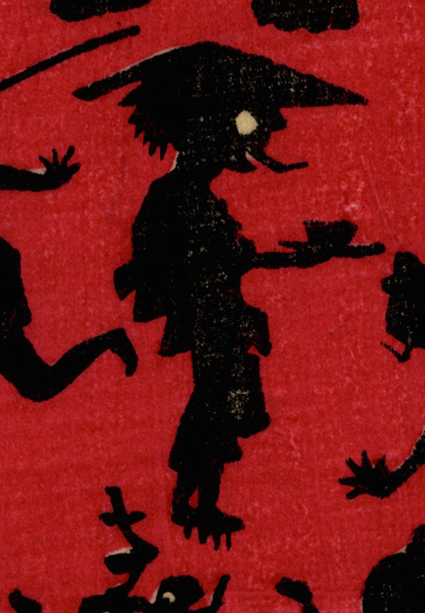

笠を着け下駄を履き、盆を手に持つ化物。盆の上には四角い何かが載っている。長い舌を出して、何かを脅かしているように見える。
著作者：小林英次郎／出典：親書誌：U426_nichibunken_0270：しん板かげゑづくし；シンパン カゲエズクシ／日付：2014／資源識別子：U426_nichibunken_0270_0020_0000
Copyright (c)2010- International Research Center for Japanese Studies, Kyoto, Japan. All rights reserved.